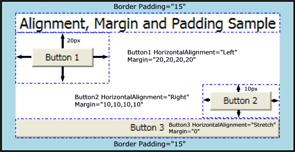

Learning the difference between Margins vs Padding
Margin is on the outside of block elements while padding
is on the inside... use margin to separate the block from
things outside it, padding to move the contents away from
the edges of the block.
- Margin - Clears an area around the border. The margin
does not have a background color, it is completely
transparent
- Border - A border that goes around the padding and
content. The border is inherited from the color property
of the box
- Padding - Clears an area around the content. The padding is affected by the background color of the box
Content - The content of the box, where text and images
appear.

Here is another image that may help with the demonstration.
